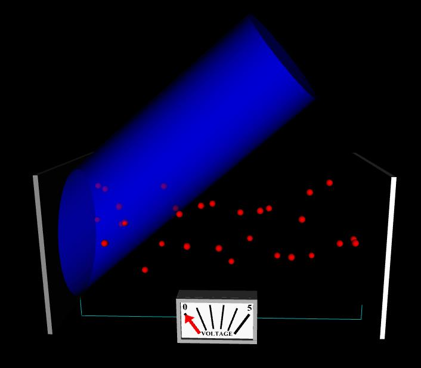
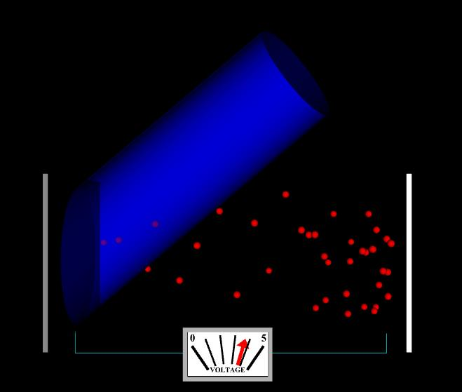

Image 1
Wavelength = 400 mm, I = 2.0 (arbitrary units), Work function = 2.50 eV, V = 0 volts.
To download the high resolution image, copy the following link into your
Definitions
Wavelength = wavelength in vacuum of light incident upon Plate 1 (plate on left)
I = intensity of light incident upon Plate 1
Work function = energy required to remove an electron from Plate 1
V = potential difference across plates (Plate 1 is at higher voltage)
Image 1
Wavelength = 400 mm, I = 2.0 (arbitrary units), Work function = 2.50 eV,
V = 0 volts.
To download the high resolution image, copy the following link into your

Image 2
Same parameters as Image 1, except that I = 10.0.
To download the high resolution image, copy the following link into your

Image 3
Same parameters as Image 2, except that V = 3.70 volts. The photoelectrons are
To download the high resolution image, copy the following link into your